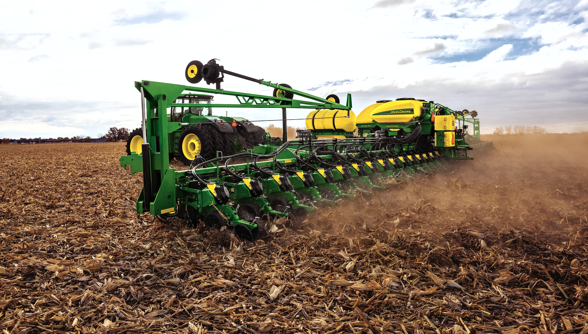

-
Neolithic Era
In the neolithic era, people used tools like scrapers, blades, axes, etc. for survival. They use these tools to cut food and to kill animals.
-
Current farming software
Today's agriculture routinely uses sophisticated technologies such as robots, temperature and moisture sensors, aerial images, and GPS technology. These advanced devices and precision agriculture and robotic systems allow businesses to be more profitable, efficient, safer, and more environmentally friendly.
-
Current farming hardware
There are many new farming hardwares that help farmers maximize efficiency and profit like The electric multi-hybrid planter. It is intended to help farmers enjoy the best of both worlds by giving them the ability to automatically change the seeds they plant. It also uses a single seed tube in order to eliminate gaps when transitioning from one seed type to another.
-
Future farming technology
I have an idea where you can fully control your farm with your phone or your computer without internet since Wi-Fi and cellular is scarce in most areas of farmland. With the app, you can harvest all your crops on your phone and water them automatically. You can also sell your crops and manage all the bugs and pests on your phone too. Something like an automated seed planter and harvester. You will have to farm the most efficiently in the future like, farming upwards instead of outwards, because the population will increase and the amount of farming will have to increase to feed everyone. You can do this while making a good margin profits and being able to be cheap and affordable for everyone in every social class.

The Farming of the PAST

The Farming of the PRESENT